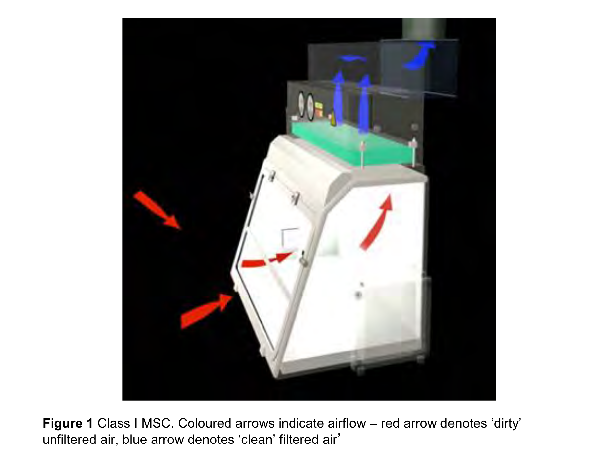
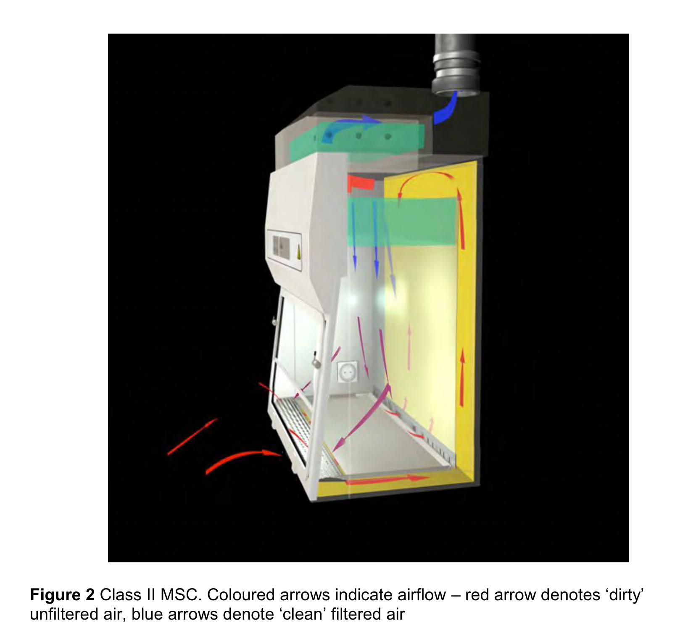
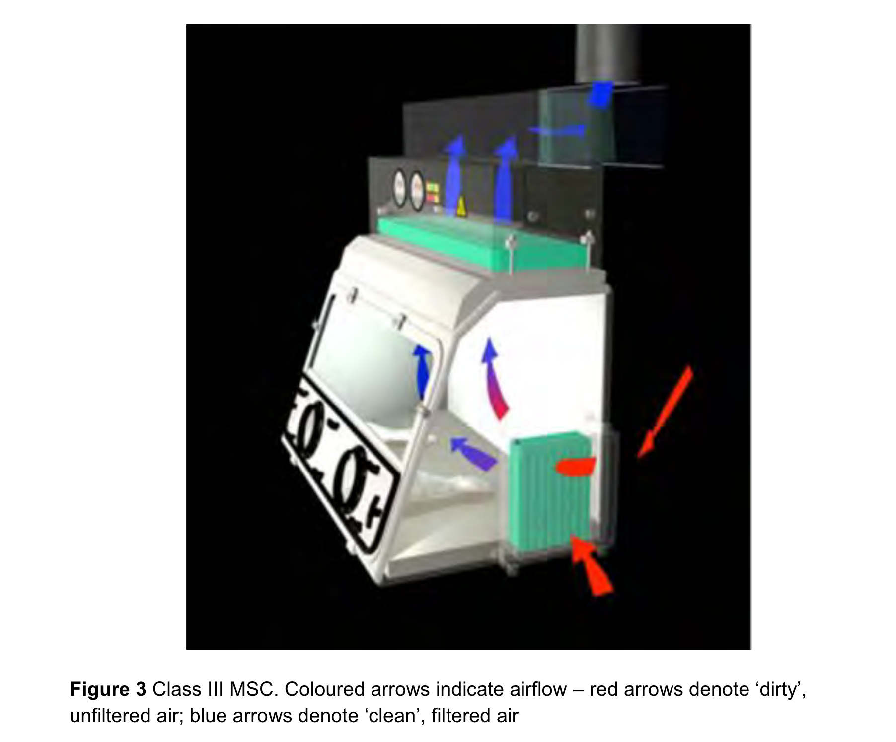

Laboratory-acquired infection – prevention and management
Introduction
Straight-forward information is surprisingly difficult to find
Used to be a typical essay question in FRCPath Part 2 – now likely to morph into short answer questions
Large language models have made this sort of question easier to prepare for
Questions usually involve an incident e.g., spill or handling of cultures on open bench
There can be subtlety in how risk is described – err on side of caution
Immediate actions
Always start by stressing immediate actions to terminate any further exposures
Information gathering
Focus on aerosol-generating high-risk activities
Robust documentation throughout – can get out of hand if collecting information retrospectively
Involve the right teams – H&S, occupational health, laboratory management, UKHSA, etc
Incident teams and meetings particularly if large exposure
Modern one-room laboratory design has complicated management
Incident reporting and learning
Important to highlight ability of lab to review and change practice
Laboratory non-conformity, DATIX, incident report, RIDDOR (HSE)
Most cases arise due to communication breakdown between clinicians and lab
Biosafety cabinets
Class 1 cabinet –– focused on protecting user
(Advisory Committe on Dangerous Pathogens 2019)

Class 2 cabinet — protects user and material

Class 3 cabinet — fully enclosed

MALDI-TOF
Procedure itself is relatively safe, but plate set up and disposal involve handling of cultures
Sepsityper can lead to earlier detection and reduce risk
Pathogen specific details
| Pathogen | Cont. level | Prophylaxis | Follow up |
|---|---|---|---|
| Brucella | 3 | Doxycycline | Serology |
| Francisella | 3 | Doxycycline | Fever watch |
| B. pseudomallei, B. mallei | 3 | Co-T, Doxycycline, Co-amoxiclav | Serology (only for B. pseudomallei) |
| M. tuberculosis | 3 | NA | Symptoms, CXR, Quantiferon |
| N. meningitidis | 2 | Ciprofloxacin, rifampicin | |
| Enteric pathogens (Salmonellae, Shigella, toxigenic E. coli) | 3* | ||
| B. anthracis | 3 | Ciprofloxacin, doxycycline | |
| Dimorphic fungi (Blasomyces, Coccidioides, Histoplasma) | 3 | Itraconazole | Serology |
Comments
Where serology indicated, baseline test should be collected and stored
Viruses and protozoa are relatively rare causes